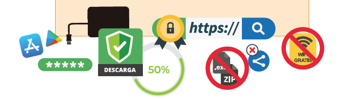

Ahora que sabemos todo lo que un hacker puede hacer y los riesgos que corremos, es el momento de ver cómo podemos protegernos.
Ahora que sabemos todo lo que un hacker puede hacer y los riesgos que corremos, es el momento de ver cómo podemos protegernos.
¿Qué medidas se te ocurren para ponérselo difícil a los black hacker?
¿Cómo protegernos de las diversas formas de ataque?
Ahora que sabemos todo lo que un hacker puede hacer y los riesgos que corremos, es el momento de ver cómo podemos protegernos.
¿Qué medidas se te ocurren para ponérselo difícil a los black hacker?
¿Cómo protegernos de las diversas formas de ataque?

Este es un decálogo de buenas prácticas para mejorar la protección de los dispositivos y la seguridad de la información de los usuarios frente a los ciberataques:
Utiliza un antivirus para analizar todas las descargas y archivos sospechosos. Debes mantenerlo siempre actualizado y activo.
Mantén el sistema operativo, navegador y aplicaciones siempre actualizadas a su última versión para evitar vulnerabilidades.
Desconfía de los adjuntos sospechosos, enlaces o promociones demasiado atractivas. La mayoría de los fraudes se basan en ataques de ingeniería social que pueden ser detectados aplicando el sentido común.
Ten cuidado por dónde navegas. Utiliza solo webs seguras con https y certificado digital y utiliza el modo incógnito cuando no quieras dejar rastro.
Descarga solo de sitios oficiales aplicaciones o software legítimo para evitar acabar infectado por malware. En el caso de las aplicaciones, recuerda dar solo los permisos imprescindibles para su funcionamiento.
Evita conectarte a redes wifi públicas o a conexiones inalámbricas desconocidas. Especialmente cuando vayas a intercambiar información sensible, como los datos bancarios. Y, en caso de que tengas que conectarte por una emergencia, trata de utilizar una VPN.
No compartas tu información personal con cualquier desconocido ni la publiques o guardes en páginas o servicios webs no fiables.
Haz copias de seguridad para minimizar el impacto de un posible ciberataque.
Las contramedidas son una serie de obstáculos para impedir que un atacante obtenga información de un equipo, como desactivar el escaneado de puertos y barridos de pings.
Para ello se utilizan las siguientes técnicas y herramientas:
Abrir solamente los puertos necesarios.
Para proteger el acceso a los servicios que deban ser restringidos se utilizan sistemas de autentificación o limitar el servicio a una determinada red.
HTTPS (TLS 1.2) Utilizar en la medida de lo posible conexiones cifradas para impedir que un atacante monitorice la actividad del sistema.
Hay que desactivar los banners de cualquier servicio, ocultar las versiones... Incluso se puede, mediante iptables, falsificar la huella de la pila TCP/IP para engañar al atacante.
Los sistemas de detección de intrusos permiten detectar escaneos de puertos, ataques e incluso puede actuarse de una forma activa contra los ataques, bloqueándolos.
Equipos señuelo aparentemente vulnerables diseñados para atraer y detectar a los atacantes, protegiendo los sistemas realmente importantes.
Sistemas centralizados de correlación de eventos y generación de alertas de seguridad.
iptables es una utilidad de línea de órdenes para configurar el cortafuegos del kernel de Linux.
Después de todo lo visto hasta ahora, ya tienes conocimientos suficientes para realizar una recopilación de medidas para evitar los fallos que se cometen en una empresa y los usuarios en general.
Resume en una presentación que entregarás junto con tu informe final, las medidas de protección según lo visto hasta ahora.
Esta presentación te servirá para mostrar a la empresa las acciones necesarias para proteger su empresa frente a ataques para que no vuelvan a poner en peligro su seguridad.
Conoce nuestra guía para la competencia digital encontrarás una ayuda para aprender a realizar una presentación.
Obra publicada con Licencia Creative Commons Reconocimiento Compartir igual 4.0